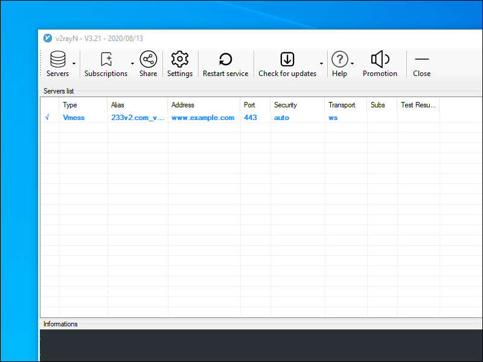

How to Install, Configure, and Run V2Ray + WebSocket + TLS + CDN
V2Ray is a censorship circumversion platform that is newer and more powerful than Shadowsocks. In particular, V2Ray offers the valuable possibility of disguising your proxy server as a web server.
Both server and client must have accurate time-of-day clocks for the V2Ray connection to work.
1. Server
This post will show you three alternative methods of setting up a V2Ray server:
1.1. Manual Setup
Since the principle is to disguise your proxy server as a web server, you will need a domain name as well as your server. Set up at least a DNS A
record pointing from your domain name to your server’s IP address.
Install a web server. You can use Apache, Nginx, or Caddy. In this example, we will use Nginx. On CentOS:
yum install nginx -y
systemctl enable nginx
systemctl start nginx
On Debian or Ubuntu:
apt install nginx -y
Specify your actual server name. On CentOS, edit /etc/nginx/nginx.conf. On Debian, edit /etc/nginx/sites-available/default. In either
case, do systemctl restart nginx after you have finished editing.
Add some realistic website content so that even manual inspection will make your server look like a web server. You can search for sample web templates from the Internet. Here is one example. On CentOS:
yum install wget zip unzip -y
wget https://github.com/arcdetri/sample-blog/archive/master.zip
unzip master.zip
cp -rf sample-blog-master/html/* /usr/share/nginx/html/
On Debian or Ubuntu:
apt install wget zip unzip -y
wget https://github.com/arcdetri/sample-blog/archive/master.zip
unzip master.zip
sudo cp -rf sample-blog-master/html/* /var/www/html/
Add a free Let’s Encrypt SSL certificate to your site. There are two common ways to do this:
- Certbot, as explained on the EFF Certbot page. You specify your server software and operating system on that page to get their recommended instructions.
- Acme.sh, which is on GitHub.
We will give two examples from the EFF Certbot page. For CentOS 8:
yum install epel-release -y
yum install certbot python3-certbot-nginx -y
certbot --nginx
echo "0 0,12 * * * root python3 -c 'import random; import time; time.sleep(random.random() * 3600)' && certbot renew -q" | sudo tee -a /etc/crontab >
/dev/null
And for Debian 10:
apt install certbot python-certbot-nginx -y
certbot --nginx
certbot renew --dry-run
Once your site is secured by an SSL certificate, add your domain to Cloudflare. If you do not have an account, you will be prompted to create one as you add your first domain. Change nameservers to Cloudflare as prompted.
Now you have a working web server with content, an SSL certificate, and its IP address hidden behind your Content Distribution Network (CDN).
Download and run the V2Ray installation script.
wget https://raw.githubusercontent.com/v2fly/fhs-install-v2ray/master/install-release.sh
bash install-release.sh
systemctl enable v2ray
systemctl start v2ray
Create /usr/local/etc/v2ray/config.json:
{
"log": {
"loglevel": "warning",
"access": "/var/log/v2ray/access.log",
"error": "/var/log/v2ray/error.log"
},
"inbounds": [{
"port": 10000,
"protocol": "vmess",
"settings": {
"clients": [
{
"id": "4db99e96-3ee3-419c-b1fb-2e4acc85ad74",
"level": 1,
"alterId": 64
}
]
},
"streamSettings": {
"network": "ws",
"wsSettings": {
"path": "/8snasdr9"
}
}
}],
"outbounds": [{
"protocol": "freedom",
"settings": {}
},{
"protocol": "blackhole",
"settings": {},
"tag": "blocked"
}],
"routing": {
"rules": [
{
"type": "field",
"ip": ["geoip:private"],
"outboundTag": "blocked"
}
]
}
}
Note: The latest version of the V2Ray install from the V2Fly project gives the possibility of splitting the configuration file into multiple files in the same directory:
00_log.json01_api.json02_dns.json03_routing.json04_policy.json05_inbounds.json06_outbounds.json07_transport.json08_stats.json09_reverse.json
Edit your Nginx configuration file, /etc/nginx/nginx.conf or /etc/nginx/sites-available/default. Make Nginx pass requests for the secret
path to V2Ray, which is listening on localhost port 10000.
location /8snasdr9 {
proxy_redirect off;
proxy_pass http://127.0.0.1:10000;
proxy_http_version 1.1;
proxy_set_header Upgrade $http_upgrade;
proxy_set_header Connection "upgrade";
proxy_set_header Host $http_host;
# Show real IP if you enable V2Ray access log
proxy_set_header X-Real-IP $remote_addr;
proxy_set_header X-Forwarded-For $proxy_add_x_forwarded_for;
}
Restart everything with these new configurations:
systemctl restart v2ray
systemctl restart nginx
On CentOS:
setsebool -P httpd_can_network_connect 1
1.2. Scripted Setup Using 233boy Script
The 233boy script automates much of the manual process. It uses Caddy rather than Nginx as the web server. As part of the process of configuring Caddy, it will automatically apply for your SSL certificate.
Before you begin, get your own domain name and server. Set up at least a DNS A record pointing from your domain name to your server’s IP address.
Download and run the 233boy script. You may need to install the curl package before this will work:
bash <(curl -s -L https://git.io/v2ray.sh)
The first thing the script does is ask you if you want to install or uninstall V2Ray. This posts adds English translations to the prompts:
1. 安装 Install
2. 卸载 Uninstall
Since you want to install, answer 1.
The script then asks you which of its many options you want:
1. TCP
2. TCP_HTTP
3. WebSocket
4. WebSocket + TLS
5. HTTP/2
6. mKCP
7. mKCP_utp
8. mKCP_srtp
9. mKCP_wechat-video
10. mKCP_dtls
11. mKCP_wireguard
12. QUIC
13. QUIC_utp
14. QUIC_srtp
15. QUIC_wechat-video
16. QUIC_dtls
17. QUIC_wireguard
18. TCP_dynamicPort
19. TCP_HTTP_dynamicPort
20. WebSocket_dynamicPort
21. mKCP_dynamicPort
22. mKCP_utp_dynamicPort
23. mKCP_srtp_dynamicPort
24. mKCP_wechat-video_dynamicPort
25. mKCP_dtls_dynamicPort
26. mKCP_wireguard_dynamicPort
27. QUIC_dynamicPort
28. QUIC_utp_dynamicPort
29. QUIC_srtp_dynamicPort
30. QUIC_wechat-video_dynamicPort
31. QUIC_dtls_dynamicPort
32. QUIC_wireguard_dynamicPort
Choose 4 for V2Ray + WebSocket + TLS, and press Enter.
Work your way through the script’s questions.
请输入 V2Ray 端口 [1-65535]，不能选择 80 或 443 端口
(默认端口: 51055):
Please enter V2Ray port [1-65535], port 80 or 443 cannot be selected
(Default port: 51055):
Recommend you accept the default port. It doesn’t really matter. This port will only be used for internal communication between the web server and V2Ray.
请输入一个 正确的域名，一定一定一定要正确，不！能！出！错！
(例如：233blog.com):
Please enter a correct domain name, it must be correct or else!
(For example: 233blog.com):
You must enter the correct domain name here, and it must resolve to the correct IP address.
请将 www.example.com 解析到: YY.YY.YY.YY
请将 www.example.com 解析到: YY.YY.YY.YY
请将 www.example.com 解析到: YY.YY.YY.YY
(是否已经正确解析: [Y]):
(Is it resolved correctly: [Y]):
You must be able to put y as your answer to the above.
安装 Caddy 来实现 自动配置 TLS
如果你已经安装 Nginx 或 Caddy
并且..自己能搞定配置 TLS
那么就不需要 打开自动配置 TLS
(是否自动配置 TLS: [Y/N]):
Install Caddy to automatically configure TLS
If you have installed Nginx or Caddy
And...you can configure TLS by yourself
Then there is no need to turn on automatic configuration TLS
(Whether to automatically configure TLS: [Y/N]):
Recommend you let the script do the work and accept the default of y above.
是否开启 网站伪装 和 路径分流 [Y/N]
(默认: [N]):
Whether to enable website camouflage and path diversion [Y/N]
(Default: [N]):
Recommend you put y here, so that you do not end up with the default for your secret path name.
请输入想要 用来分流的路径 , 例如 /233blog , 那么只需要输入 233blog 即可
(默认: [233blog]):
Please enter the path you want to use to divert, such as /233blog, then you only need to enter 233blog
(Default: [233blog]):
Recommend you choose something obscure for a secret path. In our example we will put 8snasdr9 (with no leading slash).
请输入 一个正确的 网址 用来作为 网站的伪装 , 例如 https://liyafly.com
举例...你当前的域名是 www.example.com , 伪装的网址的是 https://liyafly.com
然后打开你的域名时候...显示出来的内容就是来自 https://liyafly.com 的内容
其实就是一个反代...明白就好...
如果不能伪装成功...可以使用 v2ray config 修改伪装的网址
Please enter a correct URL as a disguise for the website, for example https://liyafly.com
For example... your current domain name is www.example.com, and the disguised URL is https://liyafly.com
Then when you open your domain name... the content displayed is the content from https://liyafly.com
In fact, it is an anti-generation... just understand...
If the disguise is not successful...you can use v2ray config to modify the disguised URL
Unless you have some better content, just press Enter to accept the default content from https://liyafly.com.
是否开启广告拦截(会影响性能) [Y/N]
(默认 [N]):
Whether to enable ad blocking (will affect performance) [Y/N]
(Default [N]):
Recommend you accept the default of n to improve performance.
是否配置 Shadowsocks [Y/N]
(默认 [N]):
Whether to configure Shadowsocks [Y/N]
(Default [N]):
Recommend you accept the default of n.
....准备安装了咯..看看有毛有配置正确了...
---------- 安装信息 -------------
V2Ray 传输协议 = WebSocket + TLS
V2Ray 端口 = 51055
你的域名 = www.example.com
域名解析 = 我确定已经有解析了
自动配置 TLS = 打开
路径分流 = /8snasdr9
是否配置 Shadowsocks = 未配置
---------- END -------------
按 Enter 回车键 继续....或按 Ctrl + C 取消.
.... Ready to install.. See if you have the correct configuration...
---------- Installation Information -------------
V2Ray transmission protocol = WebSocket + TLS
V2Ray port = 51055
Your domain name = www.example.com
Domain name resolution = I am sure it has been resolved
Automatic configuration TLS = on
Path diversion = /8snasdr9
Whether to configure Shadowsocks = not configured
---------- END -------------
Press Enter to continue...or press Ctrl + C to cancel.
Review the above parameters and press Enter when you are ready to proceed.
The script installs and configures the necessary software. At the end of the run, the script redisplays the parameters so you know what to specify on the client.
------ V2Ray 配置信息 Config info -------
地址 Address = www.example.com
端口 Port = 443
用户ID User ID / UUID = 82b0de78-10ec-4a8c-95eb-666be06fa6b8
额外ID Alter Id = 233
传输协议 Network = ws
伪装类型 Header type = none
伪装域名 Host = www.example.com
路径 Path = /8snasdr9
TLS Enable TLS = 打开
---------- END -------------
提示: 输入 v2ray url 可生成 vmess URL 链接 / 输入 v2ray qr 可生成二维码链接 Tip: Enter v2ray url to generate vmess URL link / enter v2ray qr to generate QR code link
As mentioned in the confirmation above, you can enter v2ray url or v2ray qr to retrieve the codes for the client.
Recommend you copy the vmess URL to your PC’s clipboard.
Type v2ray status to confirm that both V2Ray and Caddy are running as expected:
V2Ray 状态: 正在运行 status: running
Caddy 状态: 正在运行 status: running
You can visit your web server https://www.example.com in a browser to see your camouflage website.
Now that everything is in place, you can add your domain name to Cloudflare and change your domain's nameservers to Cloudflare’s nameservers.
1.3. Scripted Setup Using Wulabing Script
The wulabing script performs similar functions to the 233boy script. It uses Nginx as the web server. One important difference is that the wulabing script directly compiles the software from the latest sources.
Before you begin, get your own domain name and server. Set up at least a DNS A record pointing from your domain name to your server’s IP address.
Download and run the wulabing script. On CentOS, you may need to do yum install wget before this will work.
wget https://raw.githubusercontent.com/wulabing/V2Ray_ws-tls_bash_onekey/master/install.sh
chmod +x install.sh
bash install.sh
The script displays a menu offering the following options. This posts adds English translations to the prompts:
---------- 安装向导 Setup Wizard ----------
0. 升级 脚本 Upgrade script
1. 安装 Install V2Ray (Nginx+ws+tls)
2. 安装 Install V2Ray (http/2)
3. 升级 Upgrade V2Ray core
-------- 配置变更 Config changes ----------
4. 变更 Change UUID
5. 变更 Change alterid
6. 变更 Change port
7. 变更 Change TLS 版本 version (仅ws+tls有效)
-------- 查看信息 View information --------
8. 查看 实时访问日志 View real-time access log
9. 查看 实时错误日志 View real-time error log
10. 查看 V2Ray 配置信息 View V2Ray config info
-------- 其他选项 Other options -----------
11. 安装 4合1 bbr 锐速安装脚本 Install BBR
12. 安装 MTproxy(支持TLS混淆) Install MTproxy
13. 证书 有效期更新 Certificate validity update
14. 卸载 Uninstall V2Ray
15. 更新 证书crontab计划任务 Update certificate crontab
16. 清空 证书遗留文件 Clear remaining certificate files
17. 退出 Exit
请输入数字： Please enter the number:
Choose option 1 to install V2Ray with Nginx + WebSocket (WS) + TLS.
After doing some checks, the script asks you some more questions.
请确认时间是否准确,误差范围±3分钟(Y/N)
Please confirm that the time is accurate; the error range is ±3 minutes (Y/N)
Recommend you check the server time is correct then put y for yes.
The script installs some more packages.
请输入你的域名信息(eg:www.wulabing.com):
Please enter your domain information (e.g. www.wulabing.com):
Put your accurate domain name for the server, e.g. www.example.com
请输入连接端口（default:443）:
Please enter the connection port (default 443):
Recommend you use the default port 443.
请输入alterID（default:2 仅允许填数字）:
Please enter alterID (default 2, must be numeric):
Recommend you use the default of 2.
The script downloads the latest source for Nginx, OpenSSL, and V2Ray. It then compiles everything directly from the source. This takes 10–20 minutes.
请选择生成的链接种类
Please select the generated link type
1: V2RayNG/V2RayN
2: quantumult
Recommend you choose according to which V2Ray client you will use. We will choose 1.
请选择支持的 TLS 版本（default:3）:
请注意,如果你使用 Quantaumlt X / 路由器 / 旧版 Shadowrocket / 低于 4.18.1 版本的 V2ray core 请选择 兼容模式
Please select a supported TLS version (default 3):
Please note that if you use Quantaumlt X / Router / Legacy Shadowrocket / V2ray core lower than 4.18.1 please select compatibility mode
1: TLS1.1 TLS1.2 and TLS1.3（兼容模式）
2: TLS1.2 and TLS1.3 (兼容模式)
3: TLS1.3 only
Recommend you choose option 2, TLS 1.2 and TLS 1.3.
At the end of the script’s run, it displays the URL import link. This is the vmess URL used by many V2Ray clients. If you lose the vmess URL, you can redisplay it like this:
cat ~/v2ray_info.inf
Recommend you copy the vmess URL to your PC’s clipboard.
You can visit your web server https://www.example.com in a browser to see your camouflage website.
Now that everything is in place, you can add your domain name to Cloudflare and change your domain's nameservers to Cloudflare’s nameservers.
2. Client
We will consider five platforms for V2Ray clients:
For a fuller list of all possible clients, consult the V2Ray website.
2.1. Windows
We will use V2RayN, the graphical user interface for V2Ray on the Windows platform.
Open a browser and visit GitHub. Download v2rayN-Core.zip for the latest
release. After you’ve downloaded v2rayN-Core.zip, unzip the zip file.
Double-click v2rayN.exe to launch V2RayN. The first time you run the program, you may get a warning from Windows Defender SmartScreen to say Windows
protected your PC. Click More info, then click Run anyway.
The V2RayN icon appears in the system tray toward the bottom right of your Windows desktop. Click the V2RayN icon in the system tray to bring up the V2RayN interface.
Under the Help button (the question mark icon), select 语言-[中文简体] for simplified Chinese, or Language-[English] for English.
Restart V2RayN to see the interface in the new language.
There are several alternative ways to add a server. A couple of common alternatives:
- If you have not already done so, copy the vmess URL to your Windows clipboard. Paste it into V2RayN with the menu option Servers > Import bulk URLs from clipboard.
- Manually add the parameters under Servers > Add [VMess] server.
Select your chosen server, and press Enter to connect to it.
After the connection is made, close the V2RayN panel. V2RayN continues to run and is accessible via its icon in the system tray.
Now that your V2Ray client is connected to the server, configure your browser to send traffic to the V2Ray client.
In Firefox, click the hamburger menu, then select Options. Select the General tab. Scroll down to the bottom to the heading Network Settings. Click the Settings button.
- Select Manual proxy configuration.
- Fill in
127.0.0.1in SOCKS Host. - Fill in
10808in the Port. Note that V2RayN uses port 10808 in contrast to the more common port 1080 for the local proxy. - Select SOCKS v5.
- Check Proxy DNS when using SOCKS v5.
In Chrome, you can do the same thing by installing the SwitchyOmega extension and configuring it to use the SOCKS5 proxy on 127.0.0.1 port
10808.
Your browser is now configured to use the V2Ray client and the client is in turn connected to your V2Ray server. Your browsing requests and responses are being passed, totally encrypted, via the remote V2Ray server.
Check the end-to-end functionality to confirm that V2RayN and Firefox/Chrome are configured correctly. With V2RayN still running, and Firefox/Chrome proxied, visit one or more of these sites:
In all cases, you should see the IP address of the server, not your local client.
2.2. Linux
Open Firefox. Download the latest V2Ray for 64-bit Linux from GitHub. The file to
download for a 64-bit PC running Linux is v2ray-linux-64.zip. Unzip v2ray-linux-64.zip.
In the terminal or in a text editor, edit the V2Ray configuration file, which is ~/Downloads/v2ray-linux-64/config.json.
Insert the template below, substituting in your actual values for the placeholders.
{
"log": {
"loglevel": "warning"
},
"inbounds": [{
"port": 1080,
"listen": "127.0.0.1",
"tag": "socks-inbound",
"protocol": "socks",
"settings": {
"auth": "noauth",
"udp": false,
"ip": "127.0.0.1"
},
"sniffing": {
"enabled": true,
"destOverride": ["http", "tls"]
}
}],
"outbounds": [{
"protocol": "vmess",
"settings": {
"vnext": [{
"address": "YY.YY.YY.YY",
"port": 443,
"users": [
{ "id": "82b0de78-10ec-4a8c-95eb-666be06fa6b8",
"alterId": 233 }
]
}]
},
"streamSettings": {
"network": "ws",
"security": "tls",
"tlsSettings": {
"allowInsecure": false,
"serverName": "www.example.com"
},
"wsSettings": {
"path": "/8snasdr9",
"headers": {
"Host": "www.example.com"
}
}
}
},{
"protocol": "freedom",
"settings": {},
"tag": "direct"
},{
"protocol": "blackhole",
"settings": {},
"tag": "blocked"
}],
"routing": {
"domainStrategy": "IPOnDemand",
"rules":[
{
"type": "field",
"ip": ["geoip:private"],
"outboundTag": "blocked"
},
{
"type": "field",
"domain": ["geosite:category-ads"],
"outboundTag": "blocked"
}
]
},
"dns": {
"hosts": {
"domain:v2ray.com": "www.vicemc.net",
"domain:github.io": "pages.github.com",
"domain:wikipedia.org": "www.wikimedia.org",
"domain:shadowsocks.org": "electronicsrealm.com"
},
"servers": [
"1.1.1.1",
{
"address": "114.114.114.114",
"port": 53,
"domains": [
"geosite:cn"
]
},
"8.8.8.8",
"localhost"
]
},
"policy": {
"levels": {
"0": {
"uplinkOnly": 0,
"downlinkOnly": 0
}
},
"system": {
"statsInboundUplink": false,
"statsInboundDownlink": false,
"statsOutboundUplink": false,
"statsOutboundDownlink": false
}
},
"other": {}
}
Save the file. In your terminal emulator, start the V2Ray client running:
cd ~/Downloads/v2ray-linux-64
./v2ray -config=config.json
Leave the terminal open, with V2Ray running in it.
Open Firefox. From the hamburger menu, select Preferences. In the Network Settings section, click Settings. Set the network settings as follows:
- Select Manual proxy configuration.
- Fill in
127.0.0.1in SOCKS Host. - Fill in
1080in the Port. - Select SOCKS v5.
- Check Proxy DNS when using SOCKS v5.
Click OK. Firefox now sends requests to the V2Ray client, which sends them to the V2Ray server. Do an end-to end test by visiting a site such as IP Chicken.
2.3. macOS
Download the latest release of V2RayX from GitHub. The file to download is named
V2RayX.app.zip.
Launch V2RayX. Give it the requested permissons.
The V2RayX icon appears in the menu bar toward the top right of your screen. Click it to bring up the menu options.
Set Global Mode.
Click Configure. Click the plus sign (add) button, and enter the parameters for your server:
- Address (e.g.
YY.YY.YY.YY) - Port (
443in our example) - User Id (e.g.
82b0de78-10ec-4a8c-95eb-666be06fa6b8) - Alter ID (e.g.
233) - Security (e.g.
default) - Network (e.g.
ws) - Transport settings
- WebSocket (e.g. path
/8snasdr9,"Host": "www.example.com") - TLS (e.g. Use TLS, TLS server name
www.example.com)
- WebSocket (e.g. path
Click the V2RayX icon in the menu bar, and select the added server under Servers.
Click the V2RayX icon again, and click Load core. The V2RayX icon turns black instead of being grayed out.
Do an end-to end test by visiting a site such as IP Chicken.
2.4. Android
Install V2RayNG from either Google Play or GitHub. Alternatively, install BifrostV from Google Play.
Both clients allow you to add servers manually, from vmess URLs, or by scanning a QR code. On Android, the clients act more like VPNs, so there is no need to proxy the browser.
Note that we do not generally recommend mobile computing in environments where your security is threatened.
2.5. iOS
There are no free clients for iOS. Look in the iOS App Store for Shadowrocket.
Note that we do not generally recommend mobile computing in environments where your security is threatened.
3. Get Help and Report Issues
If you have a problem, SSH into your server to take a look at the logs. To view the V2Ray error log, enter the command:
tail /var/log/v2ray/error.log
To view the Nginx error log, enter the command:
tail /etc/nginx/logs/error.log
If you have informal questions about V2Ray, you can ask on social media platforms such as Reddit.
If you discover a legitimate issue with V2Ray, report it on the official GitHub issues page for the software you are using:
下载
东京数据中心
叶光明-信仰的根基.pdf 2.2 MB
叶光明-信心之道.pdf 1.4 MB
叶光明-判断之道.pdf 1.2 MB
叶光明-十字架上的交换.pdf 944.5 kB
叶光明-圣经自修课程.pdf 1.6 MB
叶光明-在你里面的圣灵.pdf 1.1 MB
叶光明-夫父何求.pdf 1.5 MB
叶光明-孤儿寡妇.pdf 609.2 kB
叶光明-我原谅.pdf 593.1 kB
叶光明-神是媒人.pdf 1.9 MB
叶光明derekprince1.mp3 50.1 MB
叶光明derekprince2.mp3 52.5 MB
叶光明derekprince3.mp3 51.8 MB
叶光明derekprince4.mp3 52.4 MB
叶光明derekprince5.mp3 52.9 MB
叶光明derekprince6.mp3 52.7 MB
叶光明derekprince7.mp3 51.9 MB
叶光明derekprince8.mp3 52.2 MB
叶光明derekprince9.mp3 52.6 MB
叶光明derekprince10.mp3 51.8 MB
聖經-cmn-cu89s.epub 1.8 MB
聖經-cmn-ncvs.epub 1.7 MB
聖經-CNET_S.epub 7.2 MB
聖經-CUV-S.epub 2.4 MB
香港数据中心
叶光明-信仰的根基.pdf 2.2 MB
叶光明-信心之道.pdf 1.4 MB
叶光明-判断之道.pdf 1.2 MB
叶光明-十字架上的交换.pdf 944.5 kB
叶光明-圣经自修课程.pdf 1.6 MB
叶光明-在你里面的圣灵.pdf 1.1 MB
叶光明-夫父何求.pdf 1.5 MB
叶光明-孤儿寡妇.pdf 609.2 kB
叶光明-我原谅.pdf 593.1 kB
叶光明-神是媒人.pdf 1.9 MB
叶光明derekprince1.mp3 50.1 MB
叶光明derekprince2.mp3 52.5 MB
叶光明derekprince3.mp3 51.8 MB
叶光明derekprince4.mp3 52.4 MB
叶光明derekprince5.mp3 52.9 MB
叶光明derekprince6.mp3 52.7 MB
叶光明derekprince7.mp3 51.9 MB
叶光明derekprince8.mp3 52.2 MB
叶光明derekprince9.mp3 52.6 MB
叶光明derekprince10.mp3 51.8 MB
聖經-cmn-cu89s.epub 1.8 MB
聖經-cmn-ncvs.epub 1.7 MB
聖經-CNET_S.epub 7.2 MB
聖經-CUV-S.epub 2.4 MB
Updated 2021-07-22